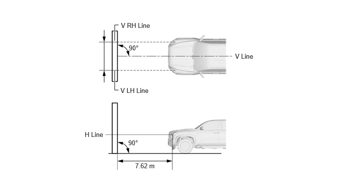
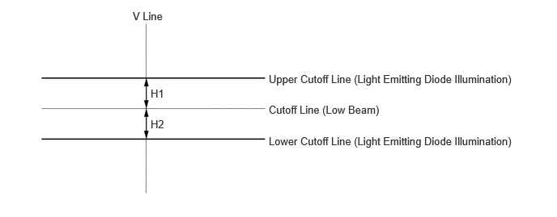
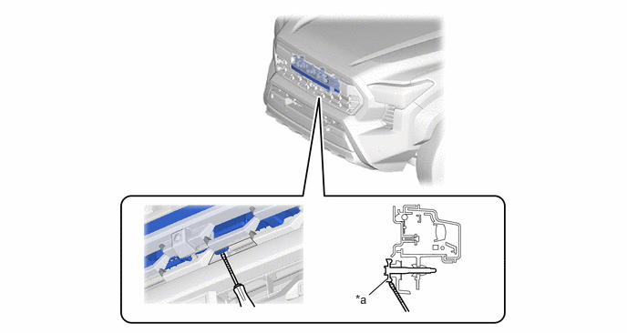

| Last Modified: 10-07-2025 | 6.11:8.1.0 | Doc ID: RM100000002K7EG |
| Model Year Start: 2024 | Model: Tacoma | Prod Date Range: [03/2024 - ] |
| Title: LIGHTING (EXT): LIGHT EMITTING DIODE ILLUMINATION: ADJUSTMENT; 2024 - 2026 MY Tacoma Tacoma HV [03/2024 - ] | ||
ADJUSTMENT
CAUTION / NOTICE / HINT
HINT:
If it is not possible to correctly adjust the light emitting diode illumination aim, check the light emitting diode illumination.
PROCEDURE
PROCEDURE
1. VEHICLE FOR LIGHT EMITTING DIODE ILLUMINATION AIMING ADJUSTMENT
(a) Prepare the vehicle:
- Make sure that the vehicle is on a level surface.
- Inflate the tires to the appropriate pressure.
- Sit a person of average weight (75 kg, 165 lb) in the driver seat.
- Fill the fuel tank.
- Make sure that the oil is filled to the specified level.
- Make sure that the coolant is filled to the specified level.
- Unload the trunk and vehicle, ensuring that the spare tire, tools, and jack are in their original positions.
- Bounce the vehicle at the corners up and down to stabilize the suspension.
- Make sure that there is no damage to the body around the headlights.
- Close all doors.
- Close the hood.
- Place a weight (20 kg, 44 lb) on the rear seat center floor.
- Change the shift position to P.
- Turn off the parking brake.
- Idle for 15 minutes.
- Complete the headlight aiming.
2. LIGHT EMITTING DIODE ILLUMINATION AIMING
(a) Prepare the vehicle:
- Place the vehicle in a location that is dark enough to clearly observe the cutoff line. The cutoff line is a distinct line, below which light from the light emitting diode illumination can be observed and above which it cannot.
- Place the vehicle at a 90° angle to the wall.

*a
90°
*b
7.62 m (25 ft.)
- Create a 7.62 m (25 ft.) distance between the vehicle (center marks of the light emitting diode illumination) and the wall.
- Make sure that the vehicle is on a level surface.
- Position the front wheels straight ahead.
- Bounce the vehicle up and down to settle the
suspension.
NOTICE:
A distance of 7.62 m (25 ft.) between the vehicle (center marks of light emitting diode illumination) and the wall is necessary for proper aim adjustment.
(b) Prepare a piece of thick white paper (approximately 2 m (6.56 ft.) (height) x 4 m (13.1 ft.) (width)) to use as a screen.
(c) Draw a vertical line down the center of the screen (V line).
(d) Set the screen as shown in the illustration.
HINT:
- Stand the screen perpendicular to the ground.
- Align the V line on the screen with the center of the vehicle.
|
(e) Draw base lines (Cutoff, V lines) on the screen as shown in the illustration. HINT: Mark the aiming marks on the screen. (1) Start the engine. (2) Turn on the headlight. (3) Cutoff Line (Low Beam): Draw a horizontal line across the screen so that it passes through the cutoff line of the low beam. (4) Turn off the headlight. (5) V Line (Center mark position of light emitting diode illumination): Draw a vertical line so that they intersect the cutoff line at center mark (aligned with the center marks of the light emitting diode illumination). |
|
3. INSPECT LIGHT EMITTING DIODE ILLUMINATION AIMING
(a) Cover the headlight or disconnect the connector of the headlight to prevent light from the headlight that is not being inspected from affecting the light emitting diode illumination aiming inspection.
NOTICE:
Do not keep the headlight covered for more than 3 minutes. The headlight lens is made of synthetic resin, which may melt or be damaged due to excessive heat.
(b) Start the engine.
(c) Turn on the light emitting diode illumination and check if the difference between H1 and H2 as shown in the illustration below is within between -50 to 50 mm (-1.97 to 1.97 in.).
4. ADJUST LIGHT EMITTING DIODE ILLUMINATION AIMING
(a) Adjust the aim vertically:
Adjust the aim of light emitting diode illumination to the specified range by turning each aiming screw with a screwdriver inserted from the front grille.
|
*a |
Aiming Screw |
- |
- |
NOTICE:
The final turn of the aiming screw should be made in the clockwise direction. If the screw is tightened excessively, loosen it and then retighten it, so that the final turn of the screw is in the clockwise direction.
HINT:
If it is not possible to correctly adjust the light emitting diode illumination aim, check the light emitting diode illumination assembly installation.